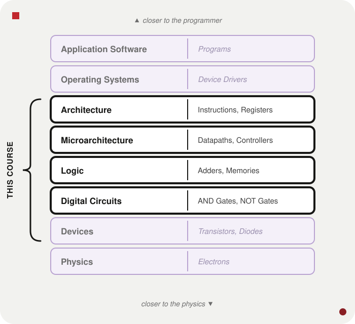
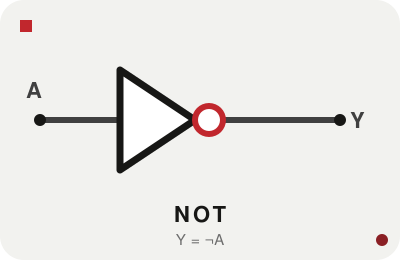
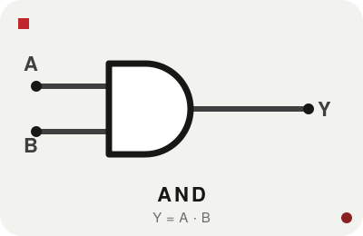
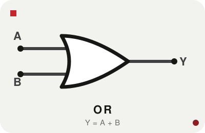
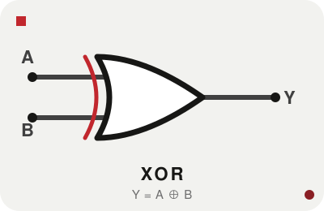
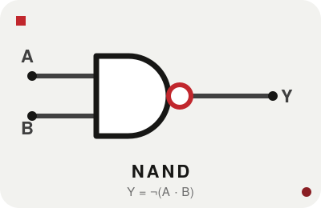
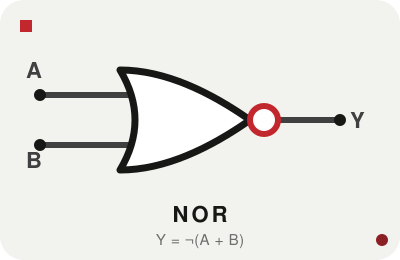
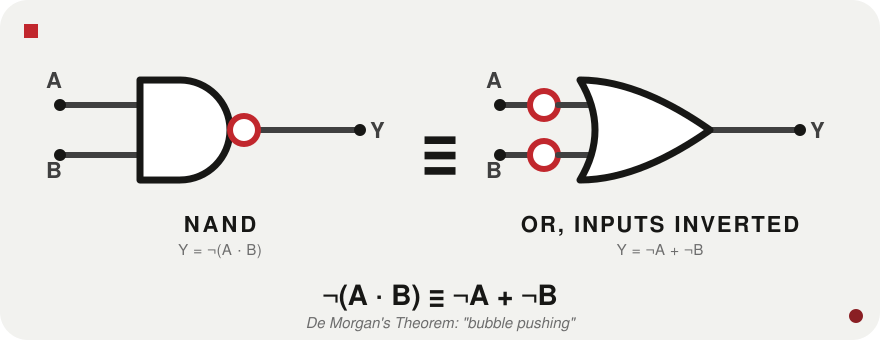
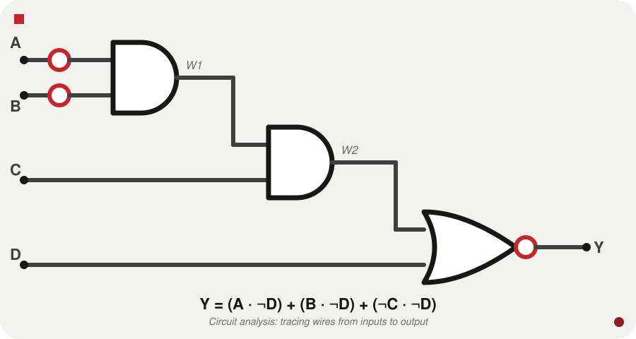

CS-UY 2214 | Computer Architecture and Organization
Week I | NYU Tandon School of Engineering
Ask someone off the street and you'll hear "electricity" or "there's a chip in there." None of that explains the mechanism.
The goal of this course: build the complete picture, from the physics of electrons up to the software you use every day.
A Python programmer doesn't need to know what a transistor is. A transistor doesn't need to know what Python is. They compose seamlessly anyway: each layer speaking a completely different language than the one above it.
Tracing source code down to hardware:

Computers only know "yes" or "no": whether electricity is flowing through a wire. But they process numbers: integers, addresses, characters. The encoding is positional notation: the same idea as decimal, just base 2.
| Base | Name | Digits | Prefix |
|---|---|---|---|
| 10 | Decimal | 0–9 | none |
| 2 | Binary | 0, 1 | 0b |
| 16 | Hexadecimal | 0–9, A–F | 0x |
0b1010 = 10 decimal. 0xFF = 255 decimal. Bare number, no prefix → assume decimal; when precision matters, always prefix.
Binary → Decimal
Multiply each bit by its positional power of 2, sum the results.
Decimal → Binary
Repeated division by 2; read remainders bottom to top.
When a system call returns "a 32-bit integer," or a register is described as "a 64-bit value": these are the units being referred to.
Binary is the native language of hardware, but nobody reads 32 ones and zeros. Hex (base 16) is the human-readable shorthand.
16 = 2⁴: each hex digit is exactly 4 binary bits: no arithmetic needed, just direct substitution.
| Dec | Bin | Hex |
|---|---|---|
| 9 | 1001 | 9 |
| 10 | 1010 | A |
| 11 | 1011 | B |
| 12 | 1100 | C |
| 13 | 1101 | D |
| 14 | 1110 | E |
| 15 | 1111 | F |
Split into groups of 4 bits (nibbles) from the right; convert each independently.
Reverse: each hex digit becomes its 4-bit binary equivalent.
Memory addresses, colour codes, MAC addresses, register dumps: almost always hex. 0x is your signal.
Transistor: an electrically controlled switch. Enough voltage at the control terminal and current flows; remove it and current stops. That on/off behaviour is 1 and 0.
Logic gate: a small number of transistors wired together into a circuit that takes binary inputs and produces a single binary output, according to a fixed rule.
The gap between "flip a switch" and "run a program" is enormous. Crossing it is what this course is about. The gates are where we begin.
Every gate can be described three ways, and you'll meet all three in the wild:
They carry exactly the same information. Being able to move between them fluidly (reading a truth table off an equation, an equation off a diagram) is a practiced skill, not a memorised one. For each gate that follows, all three are given side by side.
Also called an inverter. The only gate with a single input. The small circle on the output (the inversion bubble) is the negation; without it, the triangle just passes the signal through.

| A | Y |
|---|---|
| 0 | 1 |
| 1 | 0 |
Outputs 1 only when all inputs are 1. Think of it as an "enable" gate: A AND B passes A only when B is high.

| A | B | Y |
|---|---|---|
| 0 | 0 | 0 |
| 0 | 1 | 0 |
| 1 | 0 | 0 |
| 1 | 1 | 1 |
Outputs 1 when at least one input is 1: inclusive or, unlike everyday "soup or salad." The "merge" primitive: if any condition holds, the output is active.

| A | B | Y |
|---|---|---|
| 0 | 0 | 0 |
| 0 | 1 | 1 |
| 1 | 0 | 1 |
| 1 | 1 | 1 |
"Exclusive OR": outputs 1 when its two inputs differ. The addition primitive: when you add two bits, the sum bit is their XOR, and the carry-out is their AND.

| A | B | Y |
|---|---|---|
| 0 | 0 | 0 |
| 0 | 1 | 1 |
| 1 | 0 | 1 |
| 1 | 1 | 0 |
NAND (NOT AND)

An AND gate with an inversion bubble. Output is 0 only when all inputs are 1. The overbar covers the entire expression.
NOR (NOT OR)

An OR gate with an inversion bubble. Output is 1 only when all inputs are 0.
One gate type is sufficient to express all of Boolean logic. That matters practically in chip fabrication: a design using only one cell type is simpler and cheaper to manufacture.
Mathematicians, electrical engineers, and programmers each use different notation for the same operations. You'll see all of them:
| Operation | Notations you will encounter |
|---|---|
| NOT A | A, ~A, ¬A, A' |
| A AND B | A & B, A ∧ B, A·B, AB |
| A OR B | A|B, A∨B, A + B |
| A XOR B | A^B, A ⊕ B |
A misread expression is a misunderstood circuit. From tightest to loosest binding:
When there's any ambiguity, add parentheses. Over-parenthesising is free; a precedence error is a wrong circuit.
Negating an entire AND expression is the same as OR-ing the individual negations, and vice versa.

A NAND gate is identical to an OR gate with individually inverted inputs: two different physical implementations of the same function. Designers exploit this deliberately: bubble pushing.
Given a circuit diagram, how do you figure out what it computes? The method:

Step 1: the first AND takes NOT A and NOT B (bubbles on the inputs):
Step 2: the second AND takes W1 and C:
Step 3: the NOR gives Y, then DeMorgan's pushes the negation inward:
The same function can be written in many equivalent shapes. This course standardises on SOP: a list of AND-terms OR'd together.
The distributive law from ordinary algebra, x(y+z) = xy + xz, applies the same way to Booleans:
Compact Boolean notation:
Read aloud: "Y is 1 whenever D is 0 and at least one of A, B, or ~C is 1."
Mechanical once you have the expression: enumerate every input combination and evaluate. Four inputs → 2⁴ = 16 rows. Count up in binary, 0000 to 1111, to guarantee every combination appears once.
| A | B | C | D | Y |
|---|---|---|---|---|
| 0 | 0 | 0 | 0 | 1 |
| 0 | 0 | 0 | 1 | 0 |
| 0 | 1 | 0 | 0 | 1 |
| 0 | 1 | 1 | 0 | 1 |
| 1 | 0 | 0 | 0 | 1 |
| 1 | 0 | 1 | 0 | 1 |
| 1 | 1 | 0 | 0 | 1 |
| 1 | 1 | 1 | 0 | 1 |
(Rows with D=1 all evaluate to 0: omitted here; full table in the lecture notes.) The truth table is exhaustive but doesn't scale: 32 inputs needs four billion rows. The Boolean expression is what makes large circuits tractable.